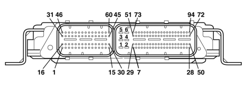
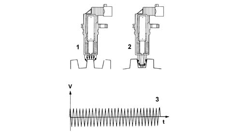
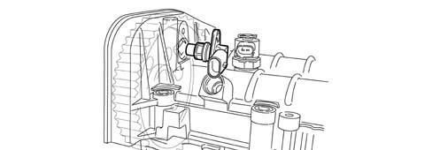
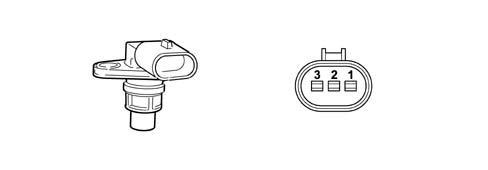
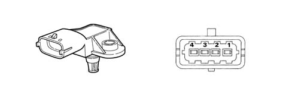
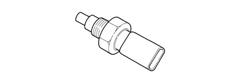
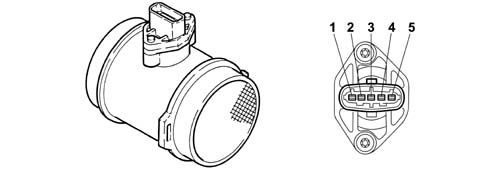
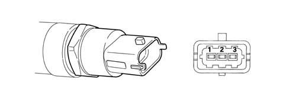

DESCRIPTION OF COMPONENTS
Injection control unit (EDC 16C39 common rail)
It is fitted in the engine compartnent on the right side panel. The control unit the flash EPROM type, i.e. it can be reprogrammed from the outside without affecting the hardware.
The injection control unit integrates the absolute pressure sensor.
PIN OUT

Connector A (vehicle wiring)
1 - Main services power supply
2 - Earth
3 - N.C.
4 - Earth
5 - Main services power supply
6 - Earth
7 - Turbine variable geometry solenoid valve signal
8 - Potentiometer 2 on accelerator pedal (-)
9 - Potentiometer signal 1 on accelerator pedal
10 - Diesel temperature sensor (-)
11 - Diesel temperature sensor signal
12 - Air conditioning linear pressure sensor (-)
13 - Air conditioning linear pressure sensor signal
14 - N.C.
15 - N.C.
16 - N.C.
17 - Signal + contact on brake pedal (NA)
18 - N.C.
19 - N.C.
20 - N.C.
21 - N.C.
22 - Air conditioning linear pressure sensor (+)
23 - N.C.
24 - N.C.
25 - K line
26 - N.C.
27 - N.C.
28 - Supply
29 - Compressor engagement relay feed negative signal
30 - Potentiometer 1 on accelerator pedal (-)
31 - Potentiometer signal 2 on accelerator pedal
32 - Downstream particle filter (DPF) temperature sensor signal
33 - Downstream particle filter (DPF) temperature sensor
34 - Upstream particle filter (DPF) temperature sensor signal
35 - Upstream particle filter (DPF) temperature sensor (-)
36 - Differential pressure sensor signal (DPF)
37 - Differential pressure sensor (DPF) (-)
38 - Cruise Control Resume
39 - N.C.
40 - N.C.
41 - N.C.
42 - N.C.
43 - N.C.
44 - Differential pressure sensor (DPF) (+)
45 - Potentiometer 1 on accelerator pedal (+)
46 - Potentiometer 2 on accelerator pedal (+)
47 - W line (immobilizer)
48 - N.C.
49 - N.C.
50 - N.C.
51 - N.C.
52 - Heater plugs control unit fault diagnosis
53 - N.C.
54 - Compressor engagement request (A/C Request) from climate control/air conditioning node
55 - N.C.
56 - SET + Cruise Control
57 - N.C.
58 - N.C.
59 - N.C.
60 - N.C.
61 - C-CAN L
62 - C-CAN H
63 - N.C.
64 - N.C.
65 - N.C.
66 - N.C.
67 - N.C.
68 - Diesel filter heater relay feed negative signal
69 - Engine cooling fan 2nd stage
70 - N.C.
71 - EOBD failure warning light
72 - Main relay feed negative signal
73 - N.C.
74 - Water in diesel filter sensor signal
75 - N.C.
76 - N.C.
77 - Cruise Control ON
78 - SET - Cruise Control
79 - N.C.
80 - Signal + contact on brake pedal (NC)
81 - N.C.
82 - N.C.
83 - C-CAN L
84 - C-CAN H
85 - N.C.
86 - N.C.
87 - N.C.
88 - N.C.
89 - N.C.
90 - Engine cooling fan 1st stage
91 - Fuel pump relay feed negative signal
92 - N.C.
93 - Heater plugs activation
94 - Engine cooling fan 3rd stage
Connector B (engine wiring)
1 - Cylinder no. 3 injector (+)
2 - Cylinder no. 2 injector (+)
3 - N.C.
4 - Fuel pressure regulator on rail (+)
5 - N.C.
6 - Swirl solenoid valve earth
7 - N.C.
8 - Fuel pressure sensor (-)
9 - N.C.
10 - N.C.
11 - Timing sensor (+)
12 - Engine rpm sensor (-)
13 - Air pressure/temperature sensor (+)
14 - N.C.
15 - N.C.
16 - Cylinder no. 1 injector (+)
17 - Cylinder no. 4 injector (+)
18 - Cylinder no. 5 injector (+)
19 - Fuel pressure regulator (+)
20 - Timing sensor (-)
21 - Engine oil level
22 - N.C.
23 - Air pressure/temperature sensor (-)
24 - N.C.
25 - N.C.
26 - N.C.
27 - Engine rpm sensor (+)
28 - Fuel pressure sensor (+)
29 - N.C.
30 - N.C.
31 - Cylinder no. 2 injector (-)
32 - N.C.
33 - Cylinder no. 4 injector (-)
34 - Fuel pressure regulator on rail (+)
35 - Diagnostic feedback (SWIRL)
36 - N.C.
37 - Air temperature sensor (flow meter)
38 - N.C.
39 - Motorized throttle earth
40 - Pressure signal from air temperature/pressure sensor
41 - Engine coolant temperature sensor (-)
42 - Output signal + (flow meter)
43 - Fuel pressure sensor signal
44 - Earth (flow meter)
45 - Swirl solenoid valve control
46 - Cylinder no. 4 injector (-)
47 - Cylinder no. 1 injector (-)
48 - Cylinder no. 5 injector (-)
49 - Fuel pressure regulator (-)
50 - Timing sensor signal
51 - N.C.
52 - Throttle body feedback
53 - Temperature signal from air temperature/pressure sensor
54 - N.C.
55 - N.C.
56 - Insufficient engine oil pressure
57 - N.C.
58 - Engine coolant temperature sensor signal
59 - Throttle solenoid valve control
60 - EGR solenoid valve
RPM SENSOR
Specifications
It is fitted on the cylinder block/crankcase facing the flywheel on the crankshaft.
It is inductive type, i.e. its operation is determined by magnetic field changes generated by the teeth passing in front of the phonic wheel (60-2 teeth).
The injection control unit uses the rpm signal for:
-
determining the engine speed of rotation
-
determining the angular crankshaft position.

Operation
The changeover from full to empty determined by the presence or absence of a gap brings about a magnetic flux change sufficient to generate an induced alternating voltage proportional to the number of teeth on the ring (or phonic wheel).
The frequency and amplitude of the voltage send to the electronic control unit provides the latter with an indication of the engine angular speed.

1 - Brass bush
2 - Permanent magnet
3 - Plastic sensor casing
4 - Coil winding
5 - Core
6 - Ring gear or flywheel
7 - Coaxial paired cable or electrical connection
The recommended distance (gap) between the end of the sensor and the flywheel for obtaining correct signals should be 0.8 - 1.5 mm.
This distance is not adjustable. If the gap is found to be outside the tolerance limits, check the condition of the sensor and phonic wheel.

1 - Maximum magnetic flux
2 - Minimum magnetic flux
3 - Induced alternating voltage
CAM ANGLE SENSOR
Specifications
This Hall effect sensor is fitted on the cylinder head facing the camshaft drive pulley.
A tooth on the pulley allows the timing sensor to indicate engine timing position.
The injection control unit uses the timing sensor signal to identify T.D.C. at the end of compression.

Operation
A current-carrying semiconductor layer immersed in a normal magnetic field (force lines at right angles to current direction) generates a potential difference known as a Hall voltage at its terminals.
If current intensity remains constant, the generated voltage depends on magnetic field intensity alone. Periodic changes in magnetic field intensity are sufficient to generate a modulated electrical signal with frequency proportional to the speed of magnetic field change. To produce this change, a tooth on the inner part of the pulley periodically moves close to the sensor.

1 - Earth
2 - Signal
3 - Supply
INTAKE AIR TEMPERATURE AND EXCESS PRESSURE SENSOR
Specifications
The excess pressure and intake air temperature sensor is an integral component which is designed to measure the pressure and the temperature of the air inside the intake manifold.
It is fitted on the intake manifold and has the task of informing the injection control unit in order to:
-
regulate the pressure of the variable geometry turbine in order to ensure optimum engine performance in all operating conditions.
-
regulate fuel injection duration.

1 - Earth
2 - Air temperature signal
3 - 5 Volt (from ECU)
4 - Supercharging pressure output signal
ENGINE COOLANT TEMPERATURE SENSOR
Specifications
This is fitted to the thermostat cup and detects coolant temperature by means of a dual NTC thermistor with negative resistance coefficient.
One NTC thermistor sends the signal to the injection control unit whilst the other sends the signal to the temperature gauge and the warning light in the instrument panel.

The sensor is designed using semiconductor technology. In other words, the resistance level drops if sensor element temperature increases with increasing coolant temperature.
Because the resistance does not change in linear fashion as temperature increases, it is relatively higher at low temperatures than at high temperatures.
AIR FLOW METER WITH BUILT IN AIR TEMPERATURE SENSOR
Specifications
The debimeter is located on the air intake sleeve and is hot film type.

1 - Air temperature sensor output signal
2 - Maintenance current
3 - Negative
4 - 5V power supply
5 - Flow meter output signal
The intake air temperature sensor is built into the debimeter.

|
The air flow meter cannot be disassembled. |
Operation
The principle of operation is based on a heated membrane positioned within a measurement channel that carries air into the engine.
The hot film membrane is maintained at constant temperature (about 120°C higher than the incoming air temperature) by the heating coil.
The air mass that flows through the measurement channel tends to remove heat from the membrane. Current must therefore flow through the coil to maintain the membrane at a constant temperature.
This current is measured by a special Wheatstone bridge.
The current is therefore proportional to the flowing air mass.

|
The flowmeter measures the air mass directly (not the volume) to eliminate problems of temperature, altitude, pressure etc. |
FUEL PRESSURE SENSOR
Specifications
It is fitted at the end of the of the single fuel manifold rail and its function is to provide the injection control unit with a feedback signal to enable it to:
-
modulate injection pressure;
-
regulate fuel injection duration.

1 - Earth
2 - Output signal
3 - Supply
ACCELERATOR PEDAL POTENTIOMETER
Construction specifications
The sensor consists of a case secured to the accelerator pedal; the case contains an axially-located shaft connected to two potetiometers: a main potentiometer and a stand-by potentiometer.
A coil spring on the shaft ensures the correct amount of resistance to pressure while a second spring ensures return following release.

Operation
The accelerator pedal position is converted into an electrical voltage signal and sent to the injection control unit by the potentiometer connected to the pedal.
The accelerator pedal position signal is processed together with the information relating to the engine rpm to obtain the injection times and the pressure.